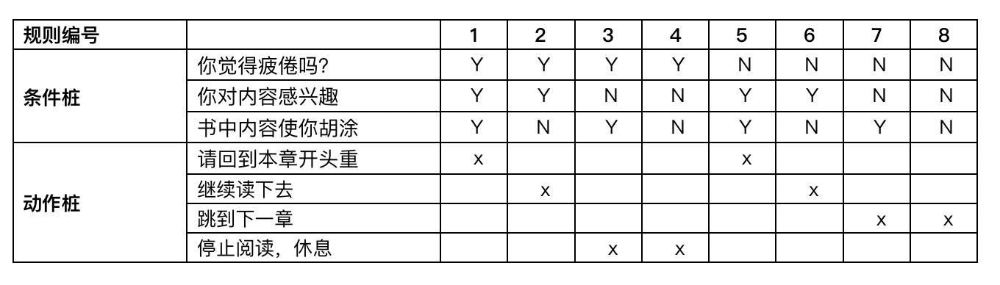
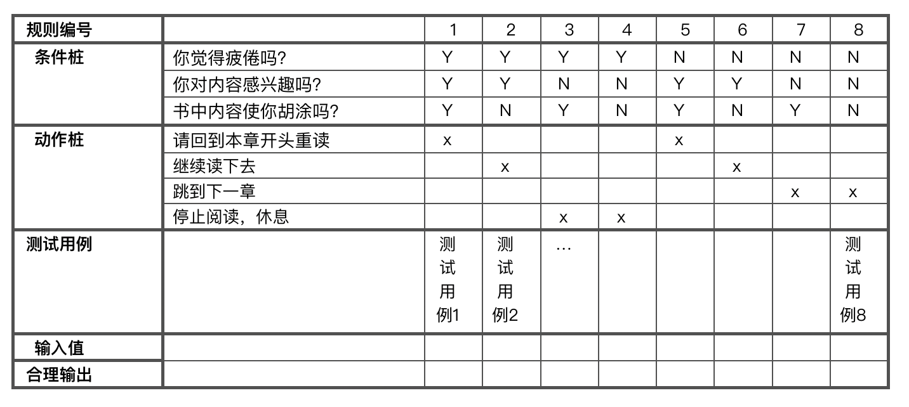
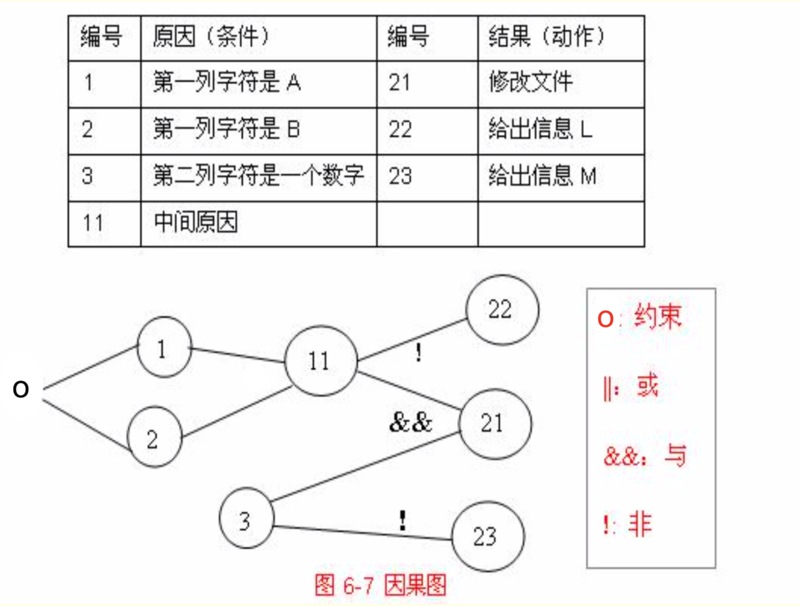

软件测试（一）黑盒测试
动态黑盒测试（Black-Box Test）
概念
- 不深入代码细节测试软件的方法称为动态黑盒测试。
- 动态（dynamic）：程序在运行；黑盒（black-box）：不知道如何运行。
- 动态黑盒测试常被称为行为测试，因为测试的是软件在使用过程中的实际行动。
测试用例设计技术
1. 等价类划分法（Equivalence Partitioning）
概念：把程序的输入域划分成若干部分，然后从每个部分中选取少数代表性数据当作测试用例。
有效等价类 & 无效等价类
- 有效等价类：指对于程序的规格说明来说是合理的、有意义的输入数据构成的集合。利用有效等价类可检验程序是否实现 了规格说明中所规定的功能和非功能。
- 无效等价类：与有效等价类的定义恰巧相反。
测试：完备性、无冗余性
确定等价类的原则：
- 在输入条件规定了取值范围或值的个数的情况下，则可以确立一个有效等价类和两个无效等价类。
- 在输入条件规定了输入值的集合或者规定了“必须如何”的条件的情况下，可以确立一个有效等价类和一个无效等价类。
- 在输入条件是一个布尔量的情况下，可确定一个有效等价类和一个无效等价类。
- 在规定了输入数据的一组值 ，并且程序要对每一个输入值分别处理的情况下，可确立n个有效等价类和一个无效等价类。
- 在规定了输入数据必须遵守的规则的情况下，可确立一个有效等价类（符合规则）和若干个无效等价类（从不同角度违反规则）。
- 如果确知，已划分的等价类中各个元素在程序中的处理方式不同，则应将此等价类进一步划分成更小的等价类。
示例
等价类划分：
被测项 边长 等价类编号 有效等价类 正数 1 无效等价类 小于0 2 测试用例设计：
测试用例编号 输入值 覆盖的等价类编号 合理输出 T1 2 (1) 正确 T2 0 (2) 错误
2. 边界值分析法（VBA, Boundary Value Analysis）
- 概念：对等价划分类的补充，不是从某等价类中随便挑一个作为代表，而是使这个等价类的每个边界都要作为测试条件。
- 设计方法：
- 确定边界情况（输入或输出等价类的边界）
- 选取正好等于、刚刚大于或刚刚小于边界值作为测试数据
- 一般情况，一个边界可以给出3个边界测试用例，自身+左右值
3. 错误推测方法
- 概念：
- 通过经验和直觉推测出程序的错误所在；
- 主观、灵感、反向思维，难以复制等等；
- 不是一个系统的方法，用作辅助手段。
4. 判定表驱动测试方法（Decision Table）
概念：是分析和表达多逻辑条件下执行不同操作的工具，也叫判定表。
组成：条件桩（Condition Stub）、动作桩（Action Stub）、条件项、动作项、规则
条件桩 条件项 动作桩 动作项 示例：
判定表：

测试用例：

5. 因果图法
概念：
- 借助图的方式，设计测试用例，被测程序有多种输入条件，输出结果依赖于输入条件的组合;
- 着重分析输入条件的各种组合，每个条件就是一个“因”，这些“因”的组合必然有一个输出的结果，这就是“果”;
- 与其他的方法相比，更侧重于输入条件的组合 。
约束符号
- E：互斥，不能同时出现
- I：包含，至少一个出现
- O：唯一，有且只有一个出现
- R：要求，若a=1那么要求b必须是1，反之如果a=0，那么b无所谓
- M：屏蔽，当a=1时，b=0，当a=0，b的值有可能是1，也有可能是0
示例：

步骤：
- 分析软件规格说明描述中, 哪些是原因（即输入条件或输入条件的等价类），哪些是结果（即输出条件），并给每个原因和结果赋予一个标识符。
- 分析软件规格说明描述中的语义，找出原因与结果之间、原因与原因之间对应的关系。根据这些关系，画出因果图。
- 把因果图转换为判定表。
- 把判定表的每一列拿出来作为依据,设计测试用例。
6. 场景法
概念：
- 用例场景：用来描述流经用例的路径，从用例开始到结束遍历这条路径上所有基本流和备选流。
- 基本流和备选流
- 场景
测试用例设计步骤与示例
设计场景：通过用例的主事件流和备选事件流的组合给出不同的场景
场景 基本流&备选流 场景1 基本流 场景2 基本流 备选流1 场景3 基本流 备选流1 备选流2 场景4 基本流 备选流3 设计测试用例标准：覆盖场景
测试用例编号 覆盖的场景 PIN 账号 输入（选择）的金额 账面金额 ATM中的金额 预测结果 1 场景1-成功提款 V V V V V 成功提款 2 场景2-ATM内无现金 V V V V I 提款选项不可用，用例结束 … - 根据测试用例标准给出具体的测试数据
测试用例编号 覆盖的场景 PIN 账号 输入（选择）的金额 账面金额 ATM中的金额 预测结果 1 场景1-成功提款 1987 809-498 100 500 2000 成功提款 2 场景2-ATM内无现金 1987 809-398 100 500 0 提款选项不可用，用例结束 …
应用场景
- 一般用于功能测试，基本上所有的功能流程测试都会用到；
- 业务复杂时，针对关键业务场景进行业务的流程测试。
黑盒测试策略总结
- 针对功能具体页面中具体的输入域进行细化测试，采用等价类、边界值；
- 用静态检查法检查按钮、链接、内容、图片等；
- 针对每个功能的流程，采用场景法，进行该功能（用例）的全方位流程测试；
- 如果是多个条件的组合可以采用判定表或因果图法；
- 在任何情况下都必须使用边界值分析方法；
- 用错误推测法再追加一些测试用例。